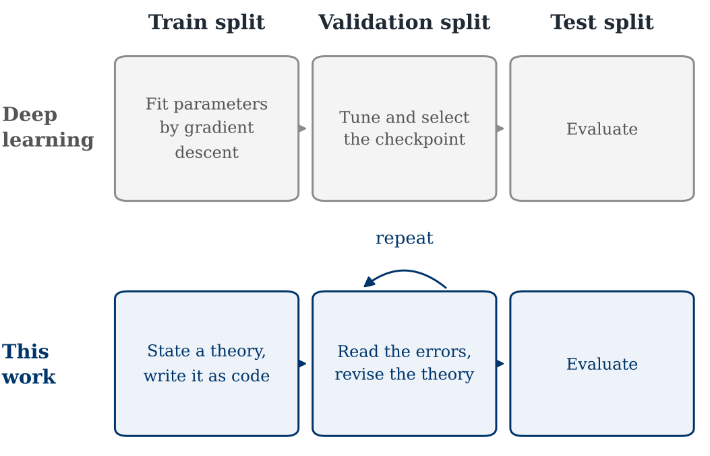
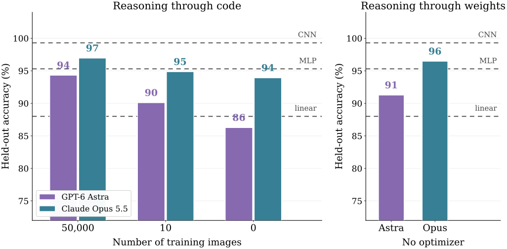
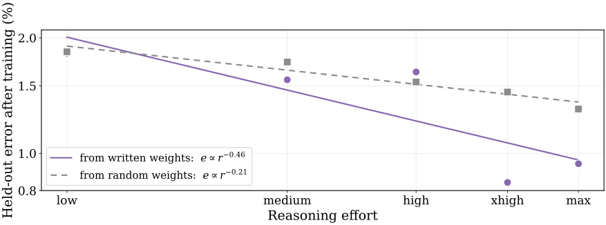
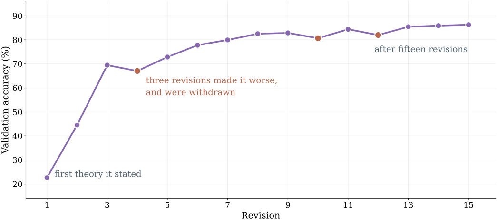
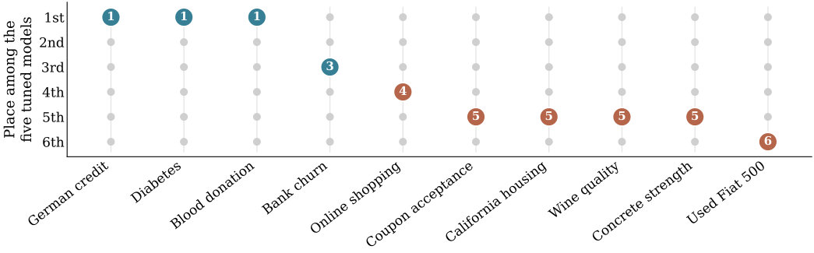
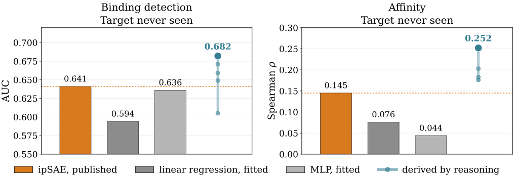
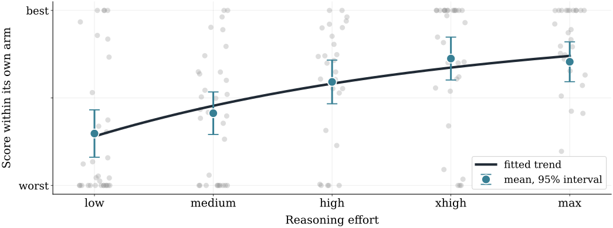

Deduce the World:
How Far Can Reasoning Go?
1Yale University 2UCSF
Research in progress, November 2026
[Poster]
Abstract
Science deduces the world from first principles, and revises a theory where its predictions fail. We ask whether a reasoning model can deduce and abduce scientific theories, and whether those theories predict and generalize better than deep learning methods. To test this, we keep the train, validation, and test splits of deep learning and replace the learner with a reasoning model. The reasoning model must state an explicit theory given the training data, translate the theory into code to make predictions, and revise it with its validation set. We test our framework across various domains that differ in how well established their first principles are. We find that the theories reasoning models form predict competitively with tuned deep learning models, even when given zero data to abductively reason from. Further, we find that they generalize better to conditions held out from training. We also find that scaling reasoning effort generally improves the theories a model forms, though the gains are uneven across domains. Finally, we hypothesize that as reasoning model capabilities improve, we will develop stronger first principles in theory-poor, data-rich domains where deep learning models currently dominate.
“From a drop of water, a logician could infer the possibility of an Atlantic or a Niagara without having seen or heard of one or the other.”
Science advances by two kinds of inference. We deduce from the principles we already hold, as far as they reach. Where deduction stops matching observation, we reason abductively from the failure to a better principle, and deduce again. Deep learning performs the second move at scale. We reach for it wherever data are plentiful and theory is thin, and we accept a predictor nobody can read in exchange for a number.
Before that trade existed, people made the inference by hand. Eratosthenes measured the circumference of the Earth from the angle of a shadow and the distance between two cities. Fermi estimated the yield of the Trinity test from how far scraps of paper drifted in the blast wave. Neither had much data. Both had principles, and reasoned from them until the world gave up a number.
A general-purpose reasoner may change the trade. If a model can derive a mechanism rather than fit one, it should generalize where a fitted model cannot. That is the capability that matters for scientific discovery, because the domains we care about are the ones where data are expensive and principles are partial. We ask three questions.
- Given everything already in the pretraining corpus, how far does reasoning from first principles take us?
- Do stated theories generalize better than fitted models when data are scarce or held out?
- Does reasoning keep helping as we scale it?
We test three domains chosen to span the range from strong first-principles theory to almost none, and scale reasoning by the effort setting of two frontier model families.
| Domain | Experiment | Learned competitor |
|---|---|---|
| VisualHandwritten digits | Classify digits from a reasoned theory, then write every weight of a network by hand, then train from those weights. | Linear classifier, MLP, convolutional network |
| GeneralTabular prediction | Ten tasks from six fields, each with fixed splits and a published leaderboard. | Linear, random forest, XGBoost, CatBoost, MLP |
| ScientificProtein binding | Derive a score for whether two chains bind, from a structure predictor’s own error estimates. | Published score, fitted linear model, fitted MLP |
TLDR: With no training images at all, a stated theory classifies handwritten digits competitively with learned models. Networks whose every weight was written by reasoning rival a trained perceptron, and those weights are a better starting point for gradient descent than random ones. Stated theories place first against five tuned models on small clinical tables and trail boosted trees where the signal lies in interactions. A parameter-free protein binding rule derived from first principles scores above the published one on a target it never saw.
First principles versus deep learning
Keep the splits, change the learner
Deep learning fits parameters on a training split, selects a checkpoint on a validation split, and reports a test split. We keep all three splits and change one thing. In place of gradient descent, a reasoning model reads the training data, states an explicit theory of why the target is predictable, and writes that theory as code. It runs the program, reads its errors on the validation split, and revises.1 The final program is frozen and scored once on the test split, against learned models tuned on the same rows.

Writing the theory as code matters more than it may appear. A theory stated in prose can be read charitably. A theory compiled into a program cannot. It either produces a number for every held-out case or it fails, and the number is scored by someone else's metric on data the model never saw. Code is what makes a stated account falsifiable at the scale of a benchmark.
The restriction, in every experiment
| May | Read papers and the web, measure the training data, inspect its own errors, revise its account, and call a language model at run time on the quantities its account names. |
|---|---|
| May not | Fit parameters to labels, search automatically over rules, store labelled examples, copy weights, or see the test split. |
| Scored | Once, frozen, on held-out data, against learned models trained on the same rows. |
The prohibition on fitting is what separates this from program synthesis. A model that searches over candidate rules and keeps whichever scores best is doing gradient descent with a clumsier optimizer. We want the account first and the measurement second, which is why every session records its hypothesis before it writes the code that tests it.
We test GPT-6 Astra and Claude Opus 5.5 at five reasoning effort settings, from low to max. A setting name does not imply equal compute across the two families.
Classifying handwritten digits
Handwritten digits are the oldest benchmark in deep learning (LeCun et al., 1998), which makes them the right place to start and the easiest place to fool yourself. A child learns digits from a handful of examples. A convolutional network learns them from sixty thousand. We asked a reasoning model to explain why the images can be separated at all, state that account as a theory, and write a classifier that applies it. The model never views an image. It studies the data through code and summary statistics.
Then we took the data away. First the full training set, then ten images, then none. With no images the model has only what it already knows about how people write digits: that a zero encloses one region and an eight encloses two, that a seven has a bar and a one does not, that a four may be open or closed at the top. The question is whether that knowledge, written down and executed, classifies anything.

A theory with no data beats a model trained on all of it
Given no training images, a stated theory of how digits are written reaches ninety four percent, above a linear classifier trained on the full sixty thousand. It does not reach a convolutional network, and the gap to that line is the honest measure of what the account leaves out.
The right panel asks a stranger question. Instead of writing a program that classifies, the model writes the weights of a neural network directly, every number chosen by argument rather than by an optimizer, and the network is then run unchanged. This is deep learning with the learning removed. Ninety six percent of test images are classified by a network no gradient ever touched.
Reasoning as initialization
Written weights are a starting point as well as a classifier. We trained each written network by gradient descent from its own written weights, and separately from random weights in the same architecture, with the optimizer, learning-rate search and training budget fixed in advance. Every parameter was trainable in both conditions. The only difference is where training began.2

This is the result we would most like to pursue, because it stops treating reasoning and training as rivals. Reasoning before training and gradient steps during it are both compute, spent in different currencies. If the exponent on the written-weight curve really is steeper, there is an exchange rate between them, and a training run could be budgeted by spending reasoning until the marginal token buys less than the marginal gradient step. We state this as a direction rather than a measurement. It is two seeds in one model family, and the fit on the written-weight curve is loose.
The deduction–abduction loop
The protocol asks the model to revise, and the research logs record every revision with the hypothesis that motivated it. One session is reproduced below. It began with regional ink evidence, which reached twenty two percent. It then abandoned that account for the topology of empty space, reasoning that what separates a zero from a one is an enclosed region rather than a distribution of ink, and jumped to forty four and then sixty nine percent.

The three marked points are the reason this figure is here. At each one the model argued that a change would help, implemented it, measured, found the validation split disagreed, and backed the change out. A fitted model cannot do this, because it has no account to be wrong about. What the model is running is the loop science runs: abduce a cause for the errors, deduce what follows if the cause is real, measure, and keep the parts that hold.
Reasoning on tabular data
Digits are one dataset, and one the models have read a great deal about. Tabular prediction is the fairer test. There are many datasets from many fields, the learned baselines are strong and well tuned, and gradient-boosted trees are the method practitioners actually reach for. TabArena curates such tasks with fixed splits and published baselines. We chose ten tasks across finance, commerce, economics, chemistry, materials and medicine before seeing any scores.
Each session received every training row and label the learned baselines saw. It wrote an account of why the target is predictable, then a program applying that account. Fitting coefficients, automated rule search and lookup tables were forbidden. Papers and general knowledge were allowed. Test labels never entered the workspace.3

We report rank rather than score because the ten tasks use different metrics, and a percentage gain in root mean squared error is not comparable to a percentage gain in area under the curve. Rank asks the only question that transfers: among six contenders on this task, where did the stated theory place?
The boundary belongs to the domain, not the model
Theories place first on blood donation, diabetes and German credit, and fifth or sixth on every regression task. Both model families fall on the same side of that line on every task, which means the pattern is a property of the problems rather than of either model.
The split is interpretable. The tasks where stated theories win are small clinical and credit tables where the mechanism is written down in a literature the model has read, and where a few hundred rows do not give a boosted tree much to work with. The tasks where they lose are regression problems whose signal lies in interactions between features that nobody has described, which is exactly what gradient boosting is for. Nothing here suggests reasoning is about to replace boosted trees on large tables. It suggests the two are good at different things, and that the difference is legible in advance.
Protein binding evaluation metrics
The previous two domains compare a stated theory against fitted models. This one compares it against a score a person reasoned their way to and published. When a structure predictor folds two protein chains together, it returns the complex and a matrix of predicted aligned error, its own estimate of how confident it is about the relative placement of each pair of residues. Turning that matrix into a number that says whether the two chains bind is an open problem, and ipSAE is a recent and well-regarded answer to it.
Each session receives the same matrix the published score receives, and the assignment of residues to chains. Coordinates, sequences, per-residue confidence and every published score are withheld by what is staged rather than by instruction. The fitted references, a linear regression and an MLP, train on sixty summary features of the same matrix.4

The stated theory
Treat the bound complex as a harmonic well. Equipartition makes the interface stiffness the inverse square of its fluctuation, and a stiffer well is a deeper one. Dividing by the binder's own internal error removes the predictor, and the units with it. Association confines six rigid-body degrees of freedom, each worth half the thermal energy times the log of the stiffness.
κ = (σ0 / σiface)2, pKd = pKd,ref + 3 log10 κ
Two things make this different from the published score. It never counts a contact, so it does not grow with the size of the interface, and it has no free parameter to set. The published score has a predicted-aligned-error cutoff that a user chooses. The factor of three is not chosen. It is six rigid-body degrees of freedom halved, and the halving comes from the vibrational free energy of confining each one.
We should be precise about how grounded this is, because it is easy to oversell. The equipartition step is correct. The counting that produces the factor of three is a real derivation and the units work out. The claim that a stiffer well is a deeper one is an assumption rather than a law, true only for a well of fixed shape, and it is that assumption rather than the counting that sets the sign of the whole expression. Predicted aligned error is also a neural network's estimate of its own error, not a thermal fluctuation, so the ratio is a ratio of model confidence. The strongest evidence that the account is doing work is not the score. It is that the account predicted, before the data were consulted, that only the binder can serve as the reference and that using the target would invert the sign. That is what the session found.
Scaling reasoning effort
Every arm in the project was run at five reasoning effort settings, which gives thirty two independent curves across digits, tabular prediction and protein binding. Each arm uses its own metric, so we normalize each one to its own range, where zero is that arm's worst setting and one is its best, and put them all on a single axis.

The trend is real and the scatter is large. Twenty three of the thirty two arms score higher at the top setting than at the bottom, and the mean rises from low through xhigh. Beyond that we would be overreading. The apparent flattening at the top is not significant, and three different functional forms, linear, logarithmic and saturating, fit the points about equally well. The honest summary is that more reasoning produces better theories across the range we tested, and that we cannot yet say whether the returns are diminishing or whether we simply ran out of settings.
The protein arms are the exception worth naming. They do not improve with effort and may decline, which is the opposite of the other two domains. The sample is four arms, so this is weak evidence. If it holds, the natural reading is that effort buys the most where the model has to construct an account, and buys little where it derives the answer on the first attempt.
So how far can reasoning go?
Far enough to be worth measuring carefully. A stated theory classifies handwritten digits with no training images at all. It places first against five tuned models on small clinical and credit tables. It produces a parameter-free protein interface score that outperforms a published one on a target it never saw. It also loses to gradient boosting on every regression task we ran, and does not approach a convolutional network on images.
The pattern across all three domains is the same. Stated theories do well where the mechanism has been written down somewhere and the data are few. Fitted models do well where the signal lies in interactions nobody has described and the data are plentiful. That boundary is a property of the field, not of the model, and it is visible before you run the experiment.
The hypothesis
Deep learning dominates the domains that are data-rich and theory-poor, which are exactly the domains where nobody has yet written the first principles down. We expect that as reasoning improves, models will supply those principles, and that stated theories will take over in the places fitted predictors currently hold.
Two limits deserve to be stated plainly rather than buried. The first is contamination. These models have read the literature of every domain we test, so recall and derivation are not fully separable, and the separation is worst exactly where the result is most striking. We removed one protein result from this page for that reason. On measured structures, a model given only the names of the two partner proteins and no structure at all scored above the unfitted physical baseline, which means the derived rule's advantage there could not be attributed to the derivation. The second is statistical. Held-out counts in the protein work are small, nothing is bootstrapped, the initialization result is two seeds in one model family, and a reasoning effort setting is not a measure of compute.
We keep the frozen protocol, the program and the full research log for every run, including the ones that failed, and share them on request.
Notes
- The restriction forbids training a parameterized model, learned features and embeddings, pretrained weights, and quantities estimated from the training labels. On images, sessions examine the data only through code and summary statistics, never by viewing an image. ↵
- The protocol fixed the optimizer, learning-rate search, paired seed ordering and checkpoint selection before training. Forward-equivalence and gradient checks preceded each architecture. Seed counts differ by setting, and Opus has fewer completed pairs than Astra. ↵
- Sessions may read papers and the web, and may use qualitative prior knowledge of a dataset. Individual test answers and outcome summaries computed over test rows are prohibited. Sessions disclosing exposure to full-dataset outcome tables were excluded by manual review. ↵
- Each setting had up to three attempts, and the first session to finish was scored. Programs may call a language model at run time on the quantities their account names, never on the matrix itself. Restriction of range deflates every correlation in this cohort, because each case is a curated candidate rather than a random draw. ↵
Citation
@misc{wei2026deduce,
title = {Deduce the World: How Far Can Reasoning Go?},
author = {Wei, Jeffrey and Cheung, Brian},
year = {2026},
note = {https://jwei302.github.io/reasoning}
}
References
- Y. LeCun, L. Bottou, Y. Bengio, and P. Haffner. Gradient-based learning applied to document recognition. Proceedings of the IEEE 86(11), 2278–2324 (1998).
- N. Erickson, L. Purucker, A. Shirkov, et al. TabArena: A Living Benchmark for Machine Learning on Tabular Data. Preprint (2025). arXiv
- R. L. Dunbrack Jr. ipSAE: Scoring predicted protein-protein interfaces from AlphaFold. Preprint (2025). bioRxiv